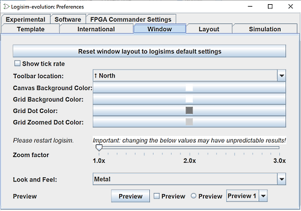

窗口选项卡

此选项卡包含影响 Logisim-evolution 主窗口外观的首选项。
-
将窗口布局重置为 logisims-evolution 默认设置 此按钮允许您将外观参数重置为 Logisim-Evolution 的默认值。
-
显示刻度率： 如果选中，则当启用刻度时，Logisim-evolution 将显示其能够完成刻度的速率的测量值。 报价变动率是通过前 1,000 个报价变动的平均值来衡量的。 （禁用刻度或更改最大刻度率将清除其历史记录。）
该实际滴答率可能远小于所选滴答率，因为 Logisim-evolution 无法以非常快的速率模拟较大的电路。 例如，对于相当大的电路，Logisim-evolution 的最大速度可能是 16 Hz； 您可以选择更快的节拍率，但实际速度不会超过 16 Hz。
-
工具栏位置： 此下拉菜单配置工具栏在整个窗口中的位置。 工具栏可以放置在窗口的四个边界中的任何一个上，即北、南、东、西。 它也可以被隐藏，或者可以放置在“中间” - 即画布的左侧但资源管理器窗格和属性表的右侧。
-
颜色选择按钮 这组按钮允许您更改 Logisim-evolution 界面的某些颜色。
画布背景颜色： 当显示屏不显示网格时更改工作区的背景颜色
网格背景颜色： 当显示屏显示网格时更改工作区的背景颜色
网格点颜色： 更改网格主要点的显示颜色
网格缩放点颜色： 更改网格中子单元点的显示颜色
-
缩放系数： 允许您在整个界面上设置缩放系数。 这适用于高清屏幕。 相反，建议使用操作系统的功能来实现此目的。
需要重新启动程序。 -
外观和感觉： 允许您根据自己的喜好选择多种界面外观进行试验。
需要重新启动程序。 -
预览： 这些按钮和框是为了向您展示界面方面修改后界面的外观
下一步： 布局选项卡 。